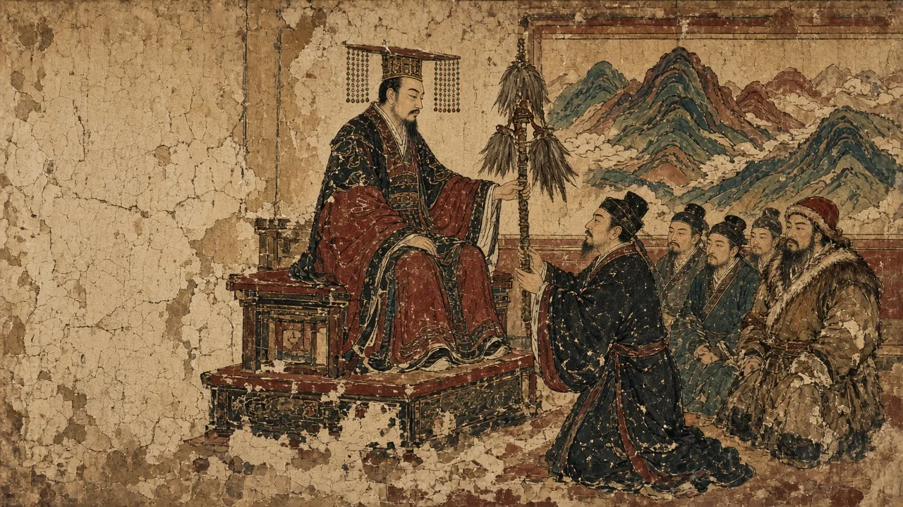
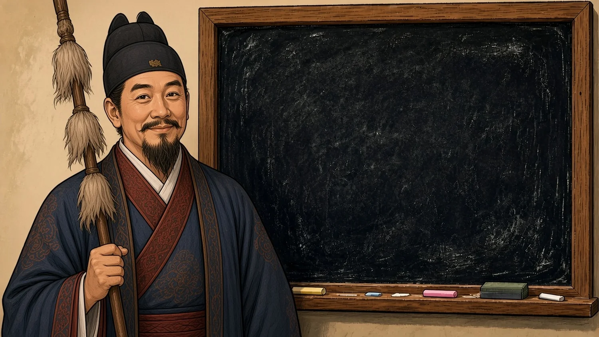
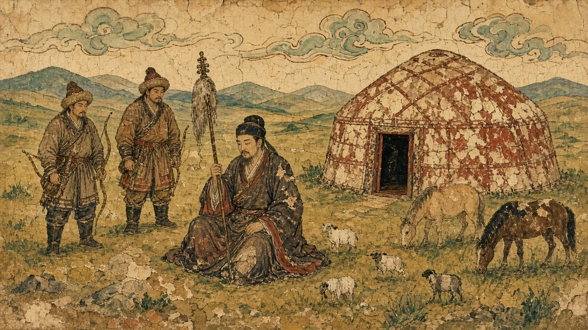
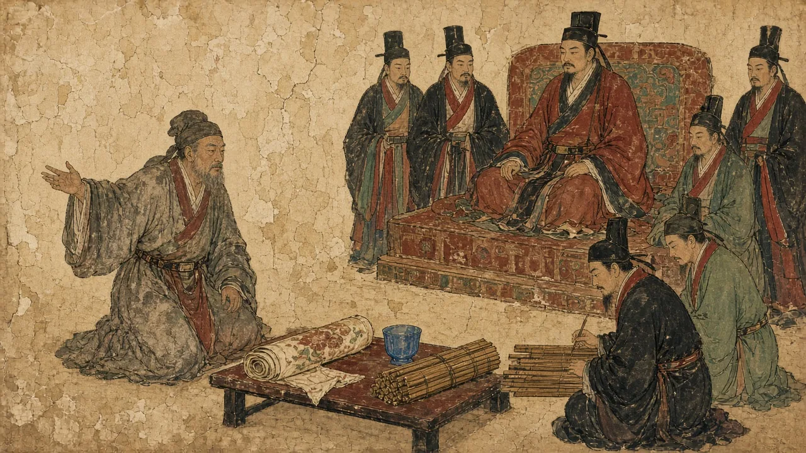
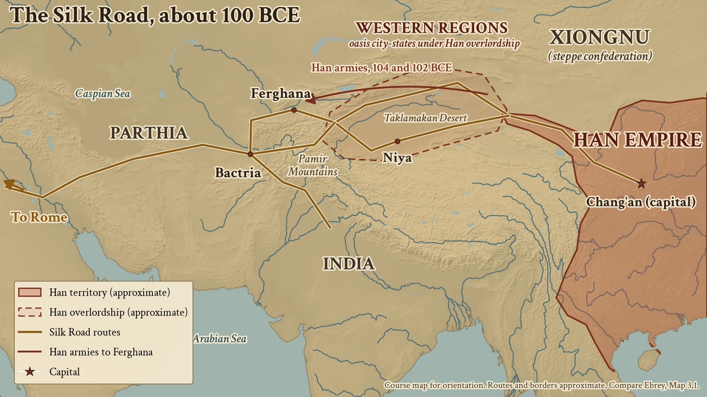
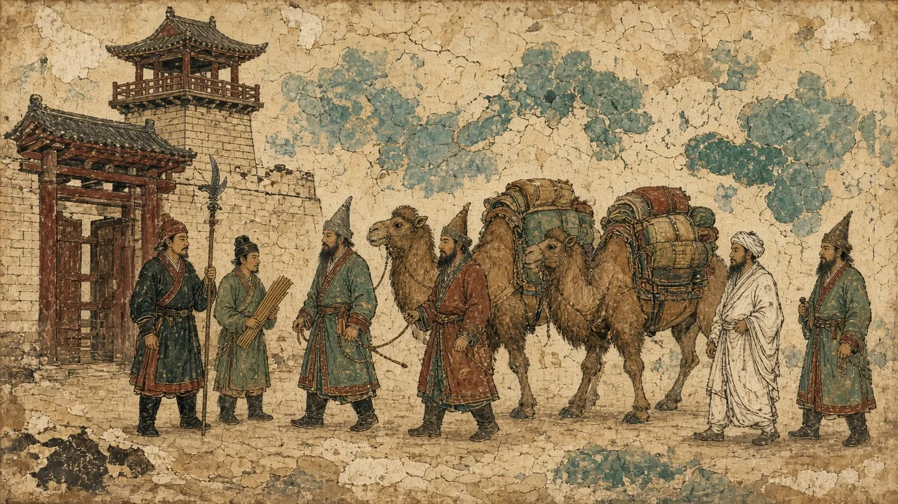
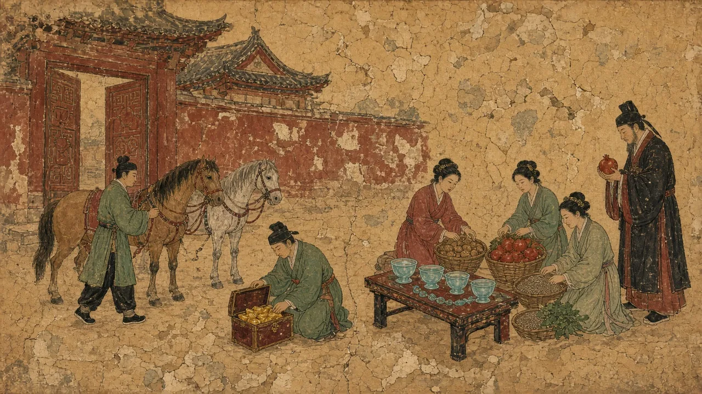
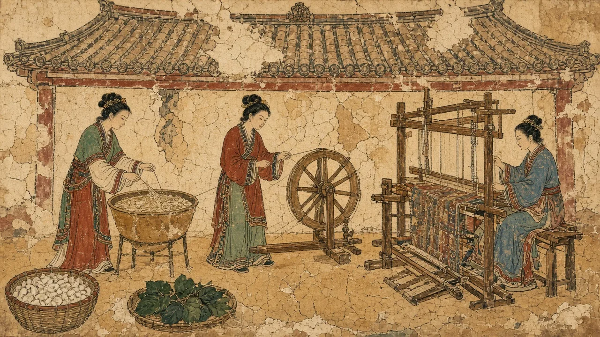
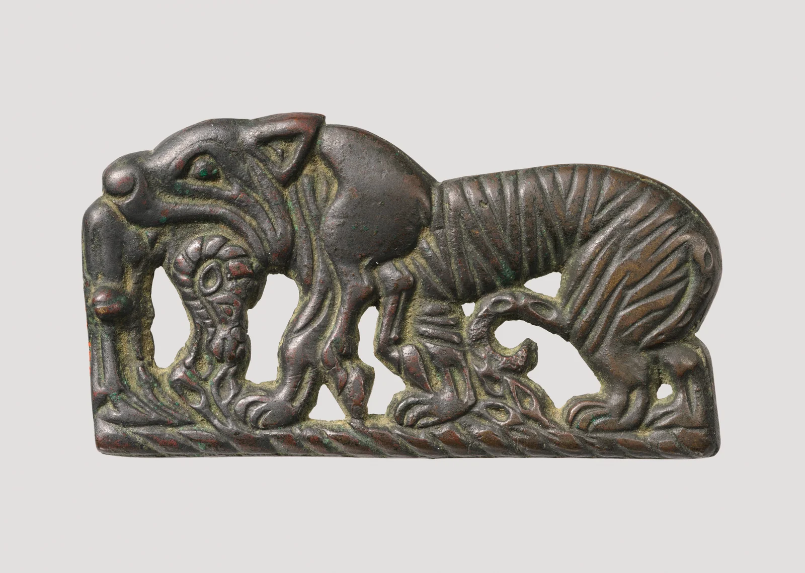
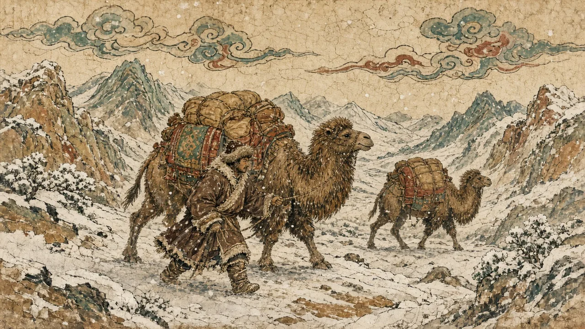

HIST 270 · History of China · Chapter 3 · Lecture 4
The Silk Road and China’s Wider World
Han China, 141 BCE–200 CE · Looking West for Allies · Armies, Caravans, and Silk · A Wider World Background essay ↗
A Han envoy’s caravan leaves a Han city gate and heads west. AI-generated interpretation in Han tomb-mural style, not a historical record.
Start here · How to study this deck on your own
Three Parts, Self-Checks, and an Open Study Buddy Button Guide You Through This Deck
Click Open Study Buddy (lower right) or press N for each slide's Study Buddy notes.
Work through three parts; each ends with a self-check.
Reading Guide checkpoint: Q11, after Part 3.
Click a teal dotted word for a definition; the Pierian Spring is required study.
Arrow keys move; Esc shows a slide map; click any image to enlarge it.
×
Xiongnu
Xiongnu (shyoong-noo): the nomadic confederation of the northern steppe that regularly raided Han settlements. Early Han emperors sent them goods and princesses as brides; Emperor Wu sent huge armies against them instead (pp. 43, 55). You met them in Lecture 2. Popups like this one close with Esc, the × mark, or a click outside the card.
Sources: Ebrey, Ch. 3, pp. 52–53.
Roadmap · From a frontier war to the far side of Eurasia
Where We’re Going Today
Why did Emperor Wu send an envoy west, and what did he learn?
How did Han armies and foreign merchants open the Silk Road?
How did the trade change China’s economy and its view of the world?
Larger question: How did a search for allies against the Xiongnu connect China to the far side of Eurasia?
Sources: Ebrey, Ch. 3, pp. 52–53, 55.

Segment 1 of 3 · Part 1
Looking West for Allies
Why did Emperor Wu send an envoy west, and what did he learn? Q11
Emperor Wu (Hàn Wǔdì) hands the envoy’s staff to Zhang Qian (Zhāng Qiān) as attendants and a steppe guide wait. AI-generated interpretation in Han tomb-mural style, not a historical record.
Part 1 · Q11 story · Emperor Wu’s frontier war · r. 141–87 BCE
Emperor Wu’s Armies Could Not Pin Down the Xiongnu
Emperor Wu sent armies of 100,000 to 300,000 into Xiongnu lands
These costly campaigns were of limited value: the nomads simply decamped
Troops could not carry enough food to stay long
The Yuezhi, driven west by the Xiongnu, might be allies
A war on the steppe gave Emperor Wu a reason to look west for help.
A Han army marches onto the steppe as Xiongnu (Xiōngnú) horsemen ride off, leaving an empty camp. AI-generated interpretation in Han tomb-mural style, not a historical record.
Sources: Ebrey, Ch. 3, pp. 43, 52.
Q11 concept · Envoy
Concept: An Envoy Speaks for a Ruler Abroad

Envoy
An official a ruler sends to another people or state to carry his messages, make agreements, and bring back news.
A Han envoy, imagined as Zhang Qian (Zhāng Qiān), at the chalkboard. Course cartoon, AI-generated in the style of Professor Austin’s chalkboard cartoon; not a portrait or historical source.
Sources: Ebrey, Ch. 3, p. 52.
Part 1 · Q11 story · Zhang Qian’s first mission · 138–126 BCE
Zhang Qian Went West to Find the Yuezhi
In 138 BCE Emperor Wu sent Zhang Qian west as an envoy to the Yuezhi
The Xiongnu captured him and held him for about ten years
He reached Ferghana and the Yuezhi in Bactria; he heard of Parthia
The Yuezhi refused; he returned about 126 BCE, after some 13 years
As an alliance, the mission failed.

Zhang Qian (Zhāng Qiān) as a captive in a Xiongnu camp, still holding the envoy’s staff. AI-generated interpretation in Han tomb-mural style, not a historical record.
×
Yuezhi
Yuezhi (yweh-jir): a people who moved west after a defeat by the Xiongnu several decades before Zhang Qian’s mission; by his time they lived in Bactria. Emperor Wu hoped they would return and fight the Xiongnu for him (p. 52).
Sources: Ebrey, Ch. 3, p. 52.
Part 1 · Q11 story · What Zhang Qian learned · second mission about 119–115 BCE
Zhang Qian’s Reports Showed the Han a Wider World
His second mission (about 119–115 BCE) to the Wusun also failed
His reports described the countries of Central Asia firsthand
Silk was already trading with countries farther out, such as Rome
Other civilizations had cities and writing too
The alliance failed. The information changed how the Han saw the world.

Zhang Qian (Zhāng Qiān) reports to Emperor Wu (Hàn Wǔdì) while scribes record his account. AI-generated interpretation in Han tomb-mural style, not a historical record.
Sources: Ebrey, Ch. 3, p. 52.
Self-check · Segment 1 · not graded
Check Yourself: Looking West for Allies
Answer each question from memory, out loud or on paper, then click Show answer. Nothing here is graded or recorded.
1. Why were Emperor Wu’s huge armies of limited value against the Xiongnu?
The Xiongnu were a moving target who simply decamped, and Han troops could not carry enough food to stay long (p. 43).
2. Why did Emperor Wu send Zhang Qian west, and where did he go?
To find the Yuezhi and bring them back to fight the Xiongnu; he reached Ferghana and the Yuezhi in Bactria and heard of Parthia (p. 52).
3. What is an envoy?
An official a ruler sends abroad to carry messages, make agreements, and bring back news (p. 52).
4. When did Zhang Qian’s two missions take place?
The first from 138 to about 126 BCE; the second from about 119 to 115 BCE (p. 52).
5. What did the Han learn from Zhang Qian’s reports?
About the countries of Central Asia, and that silk was traded with countries farther out, such as Rome; theirs was not the only civilization with cities and writing (p. 52).
How did Han armies and foreign merchants open the Silk Road? Q11
A camel caravan reaches a walled oasis town guarded by a Han watchtower. AI-generated interpretation in Han tomb-mural style, not a historical record.
Q11 concept · Silk Road
Concept: The Silk Road Was a Network of Trade Routes
Silk Road
The overland trade routes across Central Asia that linked Han China, step by step, to lands as far west as Rome.
Professor Austin at the chalkboard. Course cartoon, AI-generated in the style of Professor Austin’s chalkboard cartoon; not a portrait or historical source.
Sources: Ebrey, Ch. 3, p. 52.
Part 2 · Q11 story · Han armies in Central Asia · 104 and 102 BCE
Han Armies Subdued Ferghana and Won Control of the Routes
In 104 BCE the general Li Guangli led an army toward Ferghana; it failed
In 102 BCE a second army forced Ferghana to submit and hand over its horses
Overlordship gave China control of the trade routes across Central Asia
Oasis city-states traded more conveniently under Han garrisons
A Han army crosses snowy mountain passes on the way to Ferghana. AI-generated interpretation in Han tomb-mural style, not a historical record.
Sources: Ebrey, Ch. 3, p. 52.
Part 2 · Q11 map · The Silk Road, about 100 BCE
The Silk Road Ran Around Deserts and Over Mountains

Course map: the Silk Road, about 100 BCE, from Chang’an (Cháng’ān) past the Taklamakan Desert and Niya (Níyǎ) to Ferghana, Bactria, and Parthia. Routes and borders approximate; compare Ebrey, Map 3.1. Base data: Natural Earth (public domain).
Start at Chang’an, the Han capital
Follow the northern or southern route around the Taklamakan Desert
Cross the Pamir and Tian Shan ranges to Ferghana, Bactria, and Parthia
The Xiongnu steppe lies just north of the routes
Click the map to enlarge it.
Sources: Ebrey, Ch. 3, p. 52 and Map 3.1; Natural Earth.
Part 2 · Q11 evidence · Who carried the trade
Foreign Merchants Passed Silk West Toward Rome
Much of the trade was in the hands of Sogdian, Parthian, and Indian merchants
Goods changed hands in stages; silk eventually reached Rome
Buyers wanted skeins of silk thread and finished silk cloth
Cloth was woven in Chinese or Syrian workshops
The Han guarded the routes; foreign merchants ran most of the trade.

Sogdian, Parthian, and Indian merchants lead a silk caravan past a Han frontier fort. AI-generated interpretation in Han tomb-mural style, not a historical record.
Sources: Ebrey, Ch. 3, p. 52.
Part 2 · Q11 evidence · What came east
Caravans Brought Gold, Horses, Glass, and New Foods to China
Returning caravans carried gold and horses
Occasionally they brought West Asian handicrafts, such as glass beads and cups
The Chinese learned of walnuts, pomegranates, sesame, and coriander
All four came to be grown in China
Silk went west; new foods put down roots in China.

Goods from the west arrive at a Han estate: horses, gold, glass, and new foods. AI-generated interpretation in Han tomb-mural style, not a historical record.
Sources: Ebrey, Ch. 3, p. 52.
Part 2 · Q11 evidence · Material culture: silk
Silk Was the Chinese Product Most in Demand Abroad
The silkworm was domesticated in China by the Shang period
Filaments were twisted together into yarns for weaving
Weavers made flat weaves, gauzes, and patterned weaves
Multicolored patterns required a draw loom
Centuries of skill stood behind every bolt of silk.

Three women reel, twist, and weave silk, after the reeling and weaving scenes in Han tombs. AI-generated interpretation in Han tomb-mural style, not a historical record.
Sources: Ebrey, Ch. 3, pp. 48, 53.
Part 2 · Q11 evidence · An object from the Silk Road
A Silk Arm Cover from Niya Survived in the Desert
Excavated from tomb 8 at Niya, on the southern arm of the Silk Road
Woven with 220 warp threads per centimeter
Five colors: clouds, birds, a single-horned beast, a tiger, and characters
“The Five Planets appear in the east. This is very auspicious for China.”
A weaving buried far out on the Silk Road carries a Han omen of victory.
Silk arm cover, “Five Planets appear in the east,” excavated at Niya (Níyǎ), late Han to Jin period, about 2nd–3rd century CE, 12.5 by 18.5 cm. Photograph, Wikimedia Commons (public domain).
Sources: Ebrey, Ch. 3, p. 53; Wikimedia Commons.
Self-check · Segment 2 · not graded
Check Yourself: Armies, Caravans, and Silk
Answer each question from memory, out loud or on paper, then click Show answer. Nothing here is graded or recorded.
1. What was the Silk Road?
The overland trade routes across Central Asia that linked Han China, step by step, to lands as far west as Rome (p. 52).
2. What happened in 104 and 102 BCE, and what followed?
Li Guangli’s first campaign against Ferghana failed; the second, in 102 BCE, forced Ferghana to submit and hand over its horses; recognition of Chinese overlordship followed, giving China control of the trade routes (p. 52).
3. Why did the oasis city-states not resist the Han?
They could carry out the trade they depended on more conveniently with Chinese garrisons to protect them (p. 52).
4. Who carried much of the trade, and how did silk reach Rome?
Sogdian, Parthian, and Indian merchants; silk passed west in stages, from merchant to merchant, until it reached Rome (p. 52).
5. Name the four new foods that came to be grown in China.
Walnuts, pomegranates, sesame, and coriander (p. 52).
A Han envoy visits the market of a western city, with its own buildings, goods, and writing. AI-generated interpretation in Han tomb-mural style, not a historical record.
Sources: Ebrey, Ch. 3, pp. 52, 55.
Part 3 · Q11 story · Ban Chao in the Western Regions · 73–102 CE
Ban Chao Restored Han Control of the Oasis Cities
Han overlordship in the Western Regions was lost after Wang Mang
In 73 CE the general Ban Chao was sent to see about restoring it
Through patient diplomacy and a show of force he regained the oasis cities
In 91 CE he was named protector general; he died in 102
Ban Chao (Bān Chāo) meets the ruler of an oasis city, with Han crossbowmen as a show of force. AI-generated interpretation in Han tomb-mural style, not a historical record.
×
Protector general
Protector general: the title Ban Chao received in 91 CE as the head of Han authority over the oasis cities of Central Asia (p. 48).
Sources: Ebrey, Ch. 3, p. 48.
Part 3 · Q11 analysis · What the Silk Road changed
The Silk Road Changed What China Grew, Sold, and Spent
New crops
Walnuts, pomegranates, sesame, and coriander came to be grown in China (p. 52).
Silk abroad
Silk, most in demand abroad, went west as thread and cloth (pp. 52–53).
New costs
Armies, garrisons, and lavish gifts to foreign envoys cost the Han dearly (pp. 43, 55).
Gold, horses, and glass flowed in; silk flowed out; and the state paid to keep the routes open.
Sources: Ebrey, Ch. 3, pp. 43, 52–53, 55.
Self-check · Segment 3 · not graded
Check Yourself: A Wider World
Answer each question from memory, out loud or on paper, then click Show answer. Nothing here is graded or recorded.
1. What did the Han first learn about other civilizations?
That theirs was not the only civilization with cities and writing, and that distant civilizations had been obtaining Chinese silk through merchants (p. 52).
2. By 200 CE, what did China know about the lands to its west?
It knew of countries far to its west and knew that trade with them could be advantageous (p. 55).
3. When was Ban Chao sent west, and how did he restore control?
In 73 CE; through patient diplomacy and a show of force (p. 48).
4. What title did Ban Chao receive in 91 CE?
Protector general of the Western Regions (p. 48).
5. Name one way the Silk Road cost the Han state.
Armies and garrisons paid for by new taxes and monopolies, and lavish gifts to foreign envoys, perhaps 10 percent of revenue (pp. 43, 55).
What were the origins of the Silk Road during the Han Dynasty, and how did these trans-Eurasian connections change China’s economy and its understanding of the world?
Use the evidence from all three parts: Zhang Qian’s missions and reports, the Han armies and the merchants who carried the trade, and what the trade changed in China’s economy and its picture of the world.
Today's lecture ends here. Continue on your own: the stories below finish this chapter's history, and they end with a review question to answer again.
"A little learning is a dang'rous thing; Drink deep, or taste not the Pierian spring."Alexander Pope, An Essay on Criticism, 1711
Independent study · Q11 story · Before the Silk Road
China Was Never Completely Isolated from Eurasia
Wheat and the chariot arrived from west Asia in Shang times
Animal art spread across the steppe in late Zhou times
Xiongnu bronzes link to the animal art of other steppe nomads
Yet China had less contact with other early centers than they had with each other
The Silk Road widened contacts that already existed.

Plaque with a tiger devouring a ram, Xiongnu (Xiōngnú), about 2nd century BCE, bronze. The Metropolitan Museum of Art, Open Access (public domain).
Sources: Ebrey, Ch. 3, pp. 43, 56; The Metropolitan Museum of Art.
Independent study · Q11 story · The ship of the desert
The Two-Humped Bactrian Camel Carried the Trade
The Silk Road trade was largely carried by the two-humped Bactrian camel
A heavy coat of hair let it withstand bitter winter cold
Each camel could carry about 500 pounds of cargo
Caravans of camels crossed deserts and mountain passes
No camels, no caravans: the animal made the trade possible.

A Bactrian camel in its winter coat carries cargo through a snowy valley. AI-generated interpretation in Han tomb-mural style, not a historical record.
Sources: Ebrey, Ch. 3, p. 52.
Independent study · Q11 story · Ideas on the road
Buddhism Would Travel the Silk Road into China
India was the closest of the other early civilizations
It was the first to have a major impact on East Asia
The vehicle of that impact was Buddhism
Its founder, Siddhartha Gautama (fl. ca. 500 BCE), was called the Buddha, “enlightened one”
The routes that carried silk would also carry a religion.
A traveling teacher from India walks with a Han merchant beside a caravan. AI-generated interpretation in Han tomb-mural style, not a historical record.
Sources: Ebrey, Ch. 3, p. 56.
Self-check · Pierian Spring · not graded
Check Yourself: The Pierian Spring
Answer each question from memory, out loud or on paper, then click Show answer. Nothing here is graded or recorded.
1. What reached China from west Asia in Shang times?
Wheat and the chariot (p. 56).
2. What did Xiongnu bronze plaques share with other steppe peoples?
Animal art, connected to that of other nomadic groups on the Eurasian steppe (pp. 43, 56).
3. How much cargo could a Bactrian camel carry, and why could it survive the routes?
About 500 pounds; a heavy coat of hair let it withstand bitter winter cold (p. 52).
4. Which religion was India’s vehicle for its impact on East Asia?
Buddhism, founded by Siddhartha Gautama, the Buddha (p. 56).
5. Now answer Reading Guide Q11 again. What new evidence can you add?
For example: China was never completely isolated, but the Silk Road widened its contacts (p. 56); camels made the caravans possible (p. 52); and the routes would later carry Buddhism (p. 56).
Patricia Buckley Ebrey, A History of China, Chapter 3, “The Founding of the Bureaucratic Empire: Qin-Han China (256 B.C.E.–200 C.E.),” pp. 43, 48, 52–53, 55–56 (“The Han Dynasty,” Biography: “The Ban Family,” “Central Asia and the Silk Road,” Material Culture: “Silk from the Silk Road,” “Maintaining the Empire,” “Summary,” and Connections: “Buddhism in India and Its Spread Along the Silk Road”).
Map data
The Part 2 course map was drawn from Natural Earth public-domain coastline, river, and shaded-relief data; routes and borders are approximate (compare Ebrey, Map 3.1).
Images
The Niya silk arm cover photograph is public domain via Wikimedia Commons. The Xiongnu tiger-and-ram plaque is from The Metropolitan Museum of Art, Open Access (public domain). The two concept slides use course cartoons of a Han envoy and of Professor Austin at the chalkboard, AI-generated in the style of Professor Austin’s cartoon. All other images are AI-generated interpretations in the Chapter 3 Han tomb-mural style; not primary-source evidence. Each caption says so.